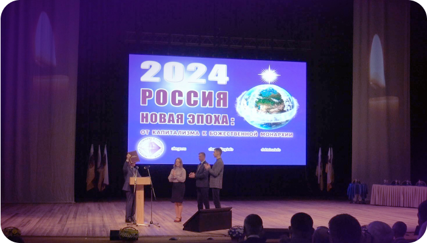

Национальный союз
«НАЧАЛО НАЧАЛ РУСИ»
Святая Русь есть
Равенство и Любовь навечно!
Слова Создателя:
Создатель знает Духовную потребность России!
Из Её рядов Создатель выбрал Мессию,
Россия подтвердила Спасителя Миссию,
Она откроет скоро Школы Бога Сессию!

союз с богом -
святая русь
ОСНОВА ИДЕОЛОГИИ НАЦИОНАЛЬНОГО СОЮЗА “НАЧАЛО НАЧАЛ РУСИ”
Только Создатель может указать нам верный курс и дать свою поддержку и защиту!
Мы как единый народ великой когда-то державы должны осознать свои духовные корни и обратиться с просьбой о помощи к Богу.
Национальный союз «Начало Начал Руси» предлагает народу России принять идеологию Равенства и Божественной Справедливости. Обстановка вокруг нашей страны и внутри неё очень сложная, и никакой политик не найдёт решения всех насущных проблем. Начиная с 2004 года Высший Космический Разум передаёт Знания
об устройстве Мироздания, Канонах (Правилах) Космоса, о смысле жизни человека не только в Материальном мире, но и в других мирах.
Таким образом Творец готовит людей к новой эпохе и к выстраиванию на планете гармоничных общественных отношений по правилам Духовного мира, то есть как на Небе, так и на Земле.
Пирамида Божественного управления мирами (Пирамида Духа) покоится на четырёх «краеугольных камнях» идеологии (религии) Единого Бога – ключевых столпах Вечности и всего Божественного Пространства – Вере, Любви, Надежде и Мудрости. В этих основополагающих понятиях заложен смысл человеческой жизни. Следование Божественной идеологии даёт возможность сознанию человека эволюционировать, постепенно приближаясь к уровню самого Создателя. По программе Творца современный мир людей в процессе эволюции должен войти в Шестую эпоху с новым мировоззрением.
Основа Пирамиды Духа формируется всеми людьми, поэтому от каждого из нас зависят её устойчивость и пропорции.
Задача народа России – сформировать с помощью Создателя общество Высшей справедливости и Равенства по подобию Пирамиды Мироздания.
Вера, Любовь, Надежда и Мудрость
— это символы Святой Руси. Они заложены в Душе многонационального народа России изначально и почитаются ежегодно во время традиционного праздника (30 сентября). Эти четыре Камня Основания Мира: Вера, Любовь, Надежда и Мудрость лучше всего характеризуют собой качества человека, стремящегося познать Истину.
Национальный союз «Начало Начал Руси» призывает народ нашей страны к возрождению русского Духа на основе Божественных Знаний. Вера, Любовь, Надежда и Мудрость объединят всех людей доброй воли и станут великим фундаментом Духовного Единения, открывающего Золотой Век России, а затем и всего человечества. Пророк, выбранный из этой страны, поведёт весь мир по пути построения Общества Равенства и Высшей справедливости — Рая на Земле.
Вера
Первый краеугольный камень основания Пирамиды, управляющей Божественным Пространством. Это путь в новую эпоху, где Вера Единому Богу – главная заповедь.
Вера – это не простое соблюдение морали и правил поведения человека, это – Знания об устройстве Мироздания, и чем больше истинных Знаний, тем сильнее Вера.
Глубина Веры зависит от чистоты сознания человека и уровня развития Души.
Вера как «пуповина», связывающая человека и Создателя, часть и Целое, главное во взаимоотношениях между человеком и Богом. Сотворив человека как Своё фрактальное подобие и подарив ему Право Свободной Воли, Создатель рассчитывает на то, что люди проявят самостоятельное желание познать внутренний и внешний миры, а через эти знания – свою связь с Ним.
Жизнь человека на Земле имеет продолжение в Духовном (Тонком) Мире. Во внутреннем «Я» каждого из нас уже изначально заложена Вера Создателю и необходимость принятия Высшего Космического Разума как Творящей и Управляющей Силы Вселенной. Вера немыслима без Любви к Создателю, к Его деяниям и ко всему сотворённому Им. Она подразумевает полное доверие Богу, принятие Его Миров, следование Канонам Вечности и стремление к совершенствованию сознания.
Человек, следующий путём познания Истины, повторяет путь Бога в Вечности, старается изо всех сил приблизиться к Создателю, раскрыть в себе Его качества. Такой человек всегда будет поддержан Любовью Творца и награждён в итоге Мудростью Его.
любовь
– Божественный двигатель и вектор поступательного развития мира, это высшее достижение гармонии отношений. Любовь – это счастье активного участия в Делах Создателя, один из главных «камней» в основании Его Пирамиды Мироустройства.
Бог есть Любовь, и сотворённый Им Мир людей тоже есть Любовь. Каждый человек является частью Вселенской Любви Небес. На Земле всё определяется словом «Любовь»! Это и любовь к детям, к членам рода своего, и любовь между родами и нациями, и, конечно, любовь между женщиной и мужчиной.
Разделённое на две половины человечество (на женщин/Инь и мужчин/Ян) в процессе эволюции должно было понять, что без Любви не может быть совершенства и соединиться с Богом можно только через Любовь, безусловную и всепрощающую!
Слово «Любовь» заключает в себе связь человека и Бога.
Люблю – значит осознаю себя частью Божественного пространства, испытываю радость бытия в окружающем мире, нахожусь в великой гармонии энергий Инь и Ян.
Только в Любви Бога сознание человека освобождается от догм и ошибочных представлений, становится свободным и, преображаясь, стремится к уровню Создателя, сотворившего его.
Человек не может быть счастлив в одиночестве, тем более если рядом кто-то страдает. Делая счастливыми других, человек приближается к Богу и обретает счастье безусловной Любви.
Безусловная Любовь характерна для всей территории России, масштабы которой не ограничиваются отдельным человеком и каждый, окунувшись в неё, перестаёт жить только для себя, потому что в этой Любви он видит Мир.
Любовь можно ощутить как резонанс, или гармонию, биения сердец. Это достижение того Истинного Ритма Вечности, который несёт в себе Творец и который несут в себе все люди как Его частицы!
Найдите в себе управление!
Любовь найдите в себе!
И увидите с удивлением
Прямую дорогу ко Мне!
Катрен «Внутренняя Вселенная» от 17.07.2016
Великая Всепрощающая Любовь – это основа Мироздания и ключ, способный открыть в человеке его Божественное происхождение.
НАДЕЖДА
Надежда является одним из краеугольных камней Истины, на которых держится Пирамида Вечности. Это есть будущее человека, которое он приближает, познавая мир и раскрывая свою внутреннюю суть.
Для Создателя все равны, но только Вера Богу и Любовь к делам Его и ближним нашим дают человеку Надежду
на спасение Души и совершенствование личности до подобия Отца Небесного.
Каждый человек мечтает о счастье для себя, своей семьи и рода, но, чтобы эти надежды воплотились,
необходимо слушать Бога и подчиняться Его правилам (Канонам), лежащим в основе Пирамиды Духа.
Необходимо жить по совести, быть праведным человеком, показывая собой пример младшему поколению. Ведь дети – наше будущее, наша надежда. В первую очередь надо передать им Знания Создателя, новые заповеди, азбуку Божественных канонов, чтобы воспитать поколение людей нового сознания.
Последняя Надежда России – это Бог!
Только Бог может восстановить Мир
в стране и в Мире!
Бог тоже ожидает от Народа России Итог:
Россия на Создателя должна иметь ориентир!
Катрен №170 (2953) «Последняя Надежда России – это Бог!»
от 18.06.2024
Принятие всеми новой единой религии, базирующейся на Вере, Любви и Надежде, позволит выстроить добрососедские отношения в обществе, в родах,
восстановить мир на планете.
Тогда есть Надежда построить государство Высшей справедливости, где приоритеты – равенство перед Всевышним и братство в духе независимо от национальности.
МУДРОСТЬ
Мудрость – это Дар Создателя, который надо заслужить. Это четвёртый камень в основании Его Пирамиды Вечности.
Если есть Вера Творцу, который создал эту Вечность, Любовь к Нему и всему сотворённому Им, Надежда на совершенствование личности своей до подобия Бога и возвращение в Духовный мир как дом свой, то Мудрость будет дарована за праведность поведения в Материальном Мире. Так обещает Создатель.
Настоящая (Божественная) Мудрость даётся человеку, когда он не видит другого пути, как только путь признания и познания Истины, а значит, Бога и, когда он, осознав своё предназначение, стремится его исполнить.
В Катрене от 19.01.2019 Творец говорит:
Мудрость – жизнь «вместе»
с Создателем!
Жизнь не в быту, а в Познании!
Мудрость проявляется в отношении человека с Верой и Любовью ко всему сущему, что есть в этом мире, в Надежде на эволюцию, на лучшее будущее. Мудрость рождает уверенность в правильности своих действий с Богом в Душе.
Мудрость людям дают Знания Создателя, которыми Он делится с нами с 2004 года через выбранного Им человека в России.
По словам Создателя, МУДРОСТЬ – это Гармония чистого сознания человека
с окружающим его Божественным Пространством. Поэтому МУДРОСТЬ –
это способность не осуждать человека, а помогать ему в очищении от пороков через постоянное совершенствование сознания.
Создатель наградил людей даром творчества, а значит, человек несёт ответственность за свои мысли и поступки. Тем более это актуально в период Квантового перехода, когда решается судьба всего человечества. Создатель напоминает нам, что МУДРОСТЬ Богов, накопленная за тысячелетия эволюции, означает ОТВЕТСТВЕННОСТЬ за свой промысел и приходит только к тем, кто видит себя частицей Бога, неотделимой от Создателя!

Равенство
Мир, который мы видим вокруг себя, – это великая гармония Создателя.
Главное условие существования в нём людей есть
Равенство всех перед Богом
Все мы несём в душе искру Любви и Света от Отца Небесного, Высшего Космического Разума. При рождении каждый человек в равной степени получает этот духовный потенциал и право свободной воли для его реализации. Великое Равенство строго исполняется на всех уровнях Мироздания, поэтому и здесь, на Земле, чтобы построить общество на Божественных принципах Веры, Любви, Надежды и Мудрости, надо начинать с равенства.
Стремление к равенству и высшей справедливости – лозунг Руси, призванной самой историей построить общество равноправных, свободных и единых духом граждан. Опыт Советского Союза показал, что равенство в социальном плане вдохновляет людей на великие свершения ради общего блага и даёт мощный посыл на рост самосознания и творческого потенциала человека. Но следуя только рациональным путём, то есть отрицая Божественное присутствие, общество развитого социализма вдруг потеряло стимул к дальнейшему процветанию и зашло в идеологический и нравственный тупик. Так Россия показала всему миру, что без Бога даже благие преобразования в обществе заканчиваются ничем.
Новые отношения, выстраиваемые в сотворчестве с Богом и в соответствии с каноном Равенства, откроют небывалые возможности для подъёма духовности в стране. Совершенствование одного человека будет условием и залогом развития другого, а равноправное участие каждого в достижении общей цели приведёт к построению пирамиды управления обществом подобной Пирамиде Божественного мироустройства.
Организация государства нового типа в виде пирамиды управления, построенной по канонам Бога, предполагает, что
- Высшая власть в стране принадлежит Создателю
- Остальные структуры управления формируются людьми, признающими Бога как руководящую силу и преобразующими общественные отношения в соответствии с Его заповедями и канонами Мироздания
Равенство перед Богом – это и дар Создателя, и первая заповедь, которая предполагает ответственность перед Всевышним за сотворённое нами здесь, в материальном мире. Осознав себя частью Высшего Комического Разума, Россия должна пройти свой путь к Божественной Мудрости и сформировать равноправное, а значит, справедливое общество, в котором нет и не может быть власти денег, классовых противоречий, сословных привилегий и духовного насилия, а процветают равенство, справедливость, любовь и гармония.
-

Договор России с Богом
9.02.2024
Читать -

Юбилейный конгресс «МАТЕРИЯ, ЭНЕРГИЯ, ИНФОРМАЦИЯ»
26.08.2024
Статья Натальи Первовой
Читать -

По канонам и заповедям –
к духовному лидерству22.02.2024
Статья Л.И. Маслова для газеты «Обозреватель»
Читать -
Образ будущего
17.02.2023
Интервью с членами Академии естественных и гуманитарных наук
Читать